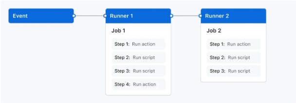

GitHub Actions
Events
Which of the following accurately describes the events that can trigger workflows in GitHub Actions ?
Workflows can be triggered by specific activity on GitHub, scheduled times, or events from external sources.
Which of the following events can trigger a workflow run in GitHub Actions ?
By posting to a REST API.
Only by pushing code changes.
Correct All of the above.
Workflows in GitHub Actions can be triggered by various events, including :
code pushes,
pull requests,
issue creation,
manual triggers,
posting to a REST API,
or even on a defined schedule.
Which of the following can trigger a workflow in your GitHub repository ?
Choose FOUR correct answers.
Correct Edit a pull request comment.
Correct Repository changes from private to public.
Correct Comment on a discussion.
Correct Someone stars a repository.
Create more than three tags at once.
Workflows
File location
Which of the following is true about workflows in GitHub ?
Choose TWO correct answers.
Correct Workflows are defined by a
YAMLfile to run one or more jobs.Correct Workflows are defined in the
.github/workflowsdirectory.
Where can you define the actions you use in your workflow ? Choose THREE correct answers.
The same repository as your workflow file.
A published Docker container image on Docker Hub.
Any public repository.
Syntax
What are the components of a GitHub Actions workflow ?
Jobs, actions, and runners.
Brian, a software engineer, is setting up a continuous integration (CI) workflow for his project on GitHub.
He wants to understand how jobs work within GitHub Actions to streamline the build and testing process efficiently.
What is a job in the context of GitHub Actions ?
A set of steps executed on the same runner.
What is a job in the context of GitHub Actions ?
A set of steps that are executed sequentially.
In GitHub Actions, a job is a collection of steps that are executed sequentially on the same runner. Each job performs a specific set of tasks defined within a workflow.

Peter is working on a GitHub Actions workflow for his project, which involves multiple tasks such as building the application, running tests, and deploying the application.
What should Peter do to ensure that the deployment job in his GitHub Actions workflow starts only after the build and test jobs have completed successfully ?
Peter should specify job dependencies in the GitHub Actions workflow file to make the deployment job dependent on the build and test jobs.
default
Which of the following is a default workflow available for GitHub projects ?
Correct Item reopened
Issue open
Sprint planning completed
Issue resolved
Default workflows:
Item added to projectItem reopenedItem closedCode changes requestedCode review approvedPull request mergedAuto-archive itemsAuto-add to project

What is the purpose of the actions/add-to-project workflow ?
It automates the process of adding issues and pull requests to projects.
Security policy
As a repository owner, what actions can you restrict on GitHub Actions ?
You can disable GitHub Actions for a repository, or set a policy that configures which Actions and reusable Workflows can be used in the repository.
redirects actions
Why does GitHub Actions not support redirects for actions or reusable workflows ?
To prevent security vulnerabilities.
reuse
What is the primary benefit of reusing workflows in GitHub Actions ?
Avoiding duplication and promoting best practices.
Reusing workflows
Rather than copying and pasting from one workflow to another, you can make workflows reusable. You and anyone with access to the reusable workflow can then call the reusable workflow from another workflow.
Reusing workflows avoids duplication. This makes workflows easier to maintain and allows you to create new workflows more quickly by building on the work of others, just as you do with actions. Workflow reuse also promotes best practice by helping you to use workflows that are well designed, have already been tested, and have been proven to be effective. Your organization can build up a library of reusable workflows that can be centrally maintained.
The diagram below shows an in-progress workflow run that uses a reusable workflow.
After each of three build jobs on the left of the diagram completes successfully, a dependent job called “Deploy” is run.
The “Deploy” job calls a reusable workflow that contains three jobs: “Staging”, “Review”, and “Production.”
The “Production” deployment job only runs after the “Staging” job has completed successfully.
When a job targets an environment, the workflow run displays a progress bar that shows the number of steps in the job. In the diagram below, the “Production” job contains 8 steps, with step 6 currently being processed.
Using a reusable workflow to run deployment jobs allows you to run those jobs for each build without duplicating code in workflows.
Under what conditions can a workflow use a reusable workflow ?
If the called workflow is stored in a public repository or a private repository with appropriate access settings.
Which keyword is used to reference a reusable workflow within a job ?
uses
What is the term for a workflow that uses another workflow ?
Caller workflow